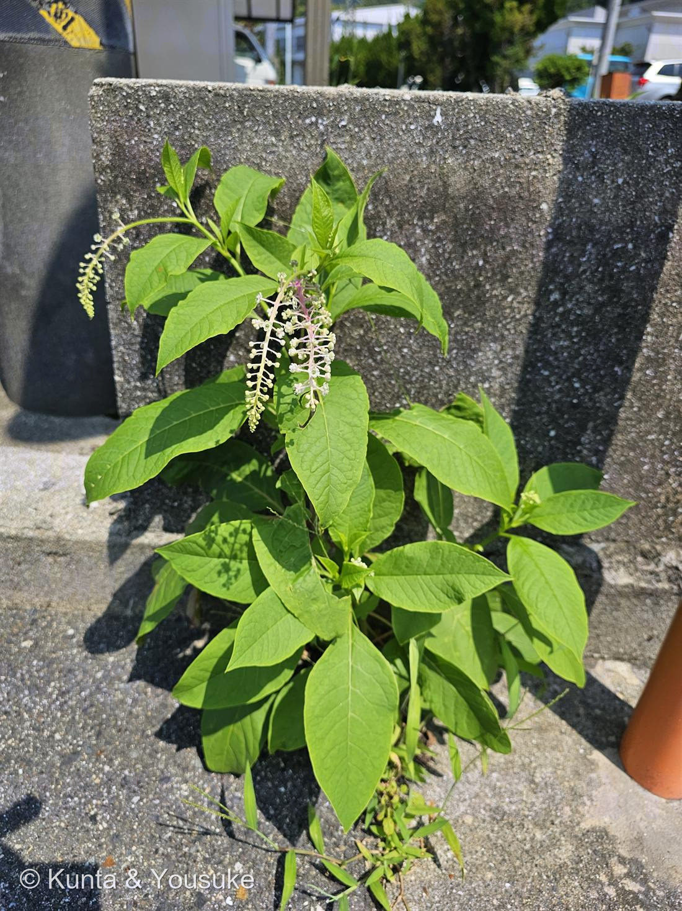
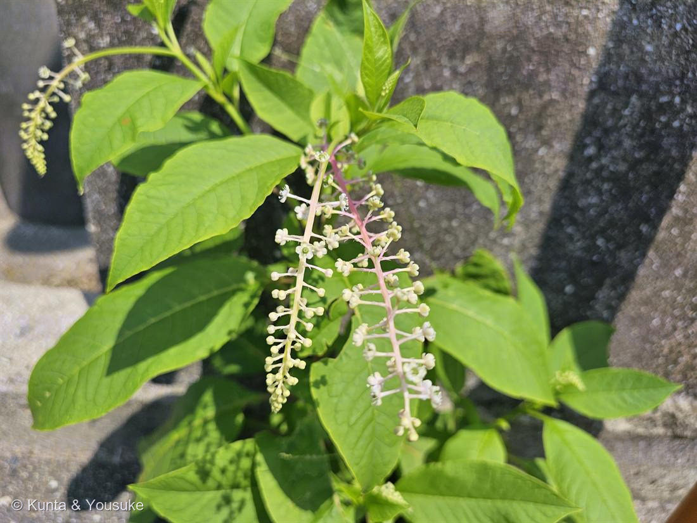
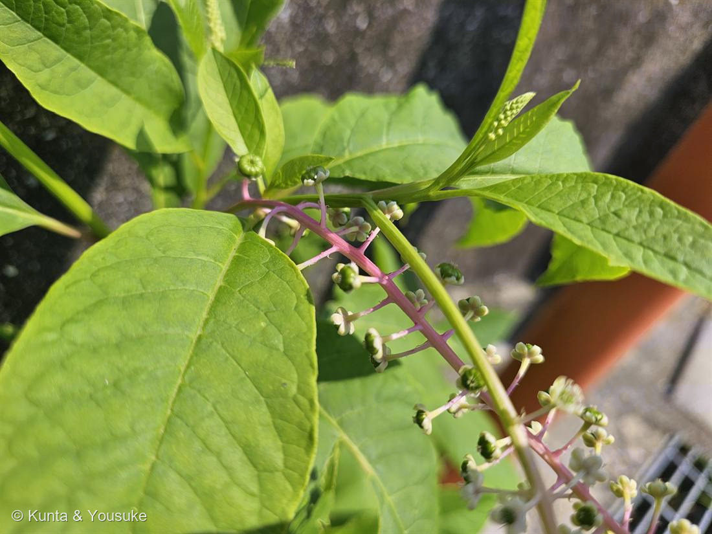

地図を読み込んでいるよ…
🔍 写真も地図も、押しているあいだ拡大して見られるよ（スマホは指を置いてすこし待ってね）。
🌍 の地図＝この子がもともと自生している場所を緑に。北アメリカ原産。日本へは明治時代初期以降に渡来し、各地に帰化。市街地の空き地・造成地・道ばた・コンクリートの隙間などに、たくましく生える。
⭐北アメリカ原産のヨウシュヤマゴボウ。明治時代の初めごろに日本へ来て、いまは全国の空き地や道ばたに帰化。⚠日本は塗っていない——もとの故郷じゃなくて、逃げ出して広がった外来の子（この株もコンクリートの割れ目から立っていた）。⭐081メマツヨイグサ・085アメリカフウロと同じ「北アメリカから来た子」。
⚠ 地図は国（日本と中国だけ県・省）までしか塗れないから、ほんとうの分布より広く見えていることがあるよ。地図はだいたいの場所。正確なところは、上の文を見てね。
ヨウシュヤマゴボウ（洋種山牛蒡）
Phytolacca americana L.
別名 · アメリカヤマゴボウ／インクベリー／ 赤い花軸・垂れる花序／ 実は黒紫／ ⚠⚠全体に毒（根＞葉＞果実・種子は特に危険）／ 原産 · 北アメリカ
ヤマゴボウ科 · Phytolaccaceae（ヤマゴボウ属 Phytolacca）── 図鑑で初めての科・ナデシコ目も初めて
燻太さんの言葉が、ぜんぶプロフィール「コンクリートの割れ目でもめげないこの子。ブドウの房のような花序だけど、毒だから食べちゃダメ。実の色に反して、花色は控えめ。よいこは試しちゃダメだよ。」──たくましくて、地味な花で、でも全体が毒。
⭐ 名前と学名の由来 ── Phytolacca は「染料の植物」
- ⭐⭐属名 Phytolacca は、ギリシャ語 phyton（植物）＋ lacca（深紅の染料）＝「染料の植物」。──あの黒紫の実の、赤紫のインク色そのものが、名前になっているんだ。種小名 americana は「アメリカの」。
- 和名「ヤマゴボウ」は、太い根がゴボウに似ているから。「ヨウシュ（洋種）」＝西洋から来た、の意味。──でも本物のゴボウ（牛蒡）はキク科で、まったく別の仲間。根がゴボウに似ているだけなんだ。
- ⭐おまけ植物は、在来のヤマゴボウ（Phytolacca esculenta）。同じヤマゴボウ属の、日本の（古い時代に渡来した）親戚。見分けは、花序が直立すること（この子は垂れる）。⭐095 ヒメイワダレソウと同じ「外来の子と、在来（に近い）親戚」の対。──垂れる房と、立つ房。ならべて見てほしい。
この植物のこと
- ヤマゴボウ科ヤマゴボウ属の大型多年草（背丈1〜2m）。⭐ヤマゴボウ科は、この図鑑で初めての科（51科目）。ナデシコ目も初めて（サボテンやスベリヒユと同じ目）。
- ⭐実は、天然のインク：黒紫に熟した実をつぶすと、赤紫色の果汁が出て、よく染まる（Wikipedia）。英語で インクベリー／pokeberry と呼ばれ、昔はインクや染料に使われた。──毒だけど、色はきれい。
- ⭐鳥が実を運ぶ：黒紫の熟した実は、鳥が食べて種を散布する（鳥は平気）。──093 センダンと同じ「鳥に運ばせる」仲間。だから、コンクリートの割れ目みたいな思いがけない場所にも芽生える。⭐この夏の「たくましい帰化・先駆の子」＝091 アカメガシワ・093 センダン・095 ヒメイワダレソウの仲間だね。
⭐⭐⭐ 同定 ── 赤い花軸と、垂れる房
- ヨウシュヤマゴボウ（Phytolacca americana）で確定。⭐効いた問い＝「他のヤマゴボウを落とせるか？」
- ①⭐⭐花序の軸が、赤〜ピンク（写真②③）＝ヨウシュヤマゴボウの目印。
- ②⭐⭐総状花序が垂れ下がる＝在来のヤマゴボウ（Phytolacca esculenta）を落とせる（あちらは花序が直立する）。──垂れるか、立つかが、外来と在来の分かれ道。
- ③花に花びらがなく、白〜淡紅の萼が5枚・中央に緑の子房（写真③。この子房が、あとで黒紫の実になる）／④茎は直立・無毛・赤みを帯びる・大きな卵形の葉・全縁／⑤場所＝コンクリートの割れ目にひとりで立つ＝帰化のヨウシュヤマゴボウらしい生えかた。
⭐⭐⭐ 燻太さんの言葉、ぜんぶこの子のプロフィール
- 燻太さんの言葉：「コンクリートの割れ目でもめげないこの子。ブドウの房のような花序だけど、毒だから食べちゃダメ。もう少し経ったら、黒紫色の実がつくよ。実の色に反して、花色は控えめ。動画でこの子を食べていた人がいたけど、よいこは試しちゃダメだよ。」──この短い言葉に、この子の特徴が、ぜんぶ入ってる。
- ⭐コンクリートの割れ目でもめげない＝写真①。ブロック塀の割れ目から、まっすぐ立ち上がっている。北米生まれの帰化植物で、空き地・造成地・すき間に、たくましく生える（Wikipedia）。
- ⭐ブドウの房のような花序＝写真②③。総状花序（房状に花がならぶ）が、垂れ下がる。──でもブドウ（ブドウ科）とは、まったく別の仲間（この子はナデシコ目ヤマゴボウ科）。
- ⭐実の色に反して、花色は控えめ＝燻太さんの観察がぴったり。花には花びらがない（白〜淡い紅の萼が5枚だけ）。地味。──でも実は、黒紫色になって、うんと目立つ。「花は控えめ、実で勝負」の子。
⚠⚠ 毒 ── 「よいこは試しちゃダメ」は、ほんとうに大事
- ⚠⚠全体に毒がある。毒の強さは「根 ＞ 葉 ＞ 果実」の順で、種子はとくに危険（Wikipedia）。毒成分はフィトラッカトキシン、フィトラッカサポニンなど。
- ⚠動画で食べていた人＝アメリカの「ポークサラダ（poke sallet）」。アメリカ南部で、若芽を、何度も茹でこぼして毒を抜いてから食べる郷土料理。──でも下処理を誤ると危険で、幼児が種をつぶした果汁を飲むと重い症状が出る（Wikipedia）。⭐だから燻太さんの「よいこは試しちゃダメ」は、大正解。
- ⚠⚠⚠そして、いちばん大事な誤食注意。「山ごぼうの漬物」として売られているものは、モリアザミ（キク科）や野菜のゴボウの根で、この植物ではない（Wikipedia）。──名前が「ヤマゴボウ」でも、この子の根を食べてはいけない。毒だから。名前の似た「漬物のヤマゴボウ」と、絶対に混同しないでね。
参考：Wikipedia「ヨウシュヤマゴボウ」（Phytolacca americana・ヤマゴボウ科ヤマゴボウ属・ナデシコ目・北米原産／明治初期以降に帰化・市街地の空き地や造成地に生える・茎は直立・無毛・赤い・白〜薄紅の花が垂れ下がる・初秋に黒紫色に熟す扁平な液果・潰すと赤紫の果汁・全体に毒／根＞葉＞果実／種子はとくに危険／フィトラッカトキシン・サポニン・根がゴボウに似る／市販の山ごぼう漬物はモリアザミか野菜ゴボウで別物・アメリカ南部では若芽を茹でこぼして食用（危険）・在来ヤマゴボウは花序が直立）